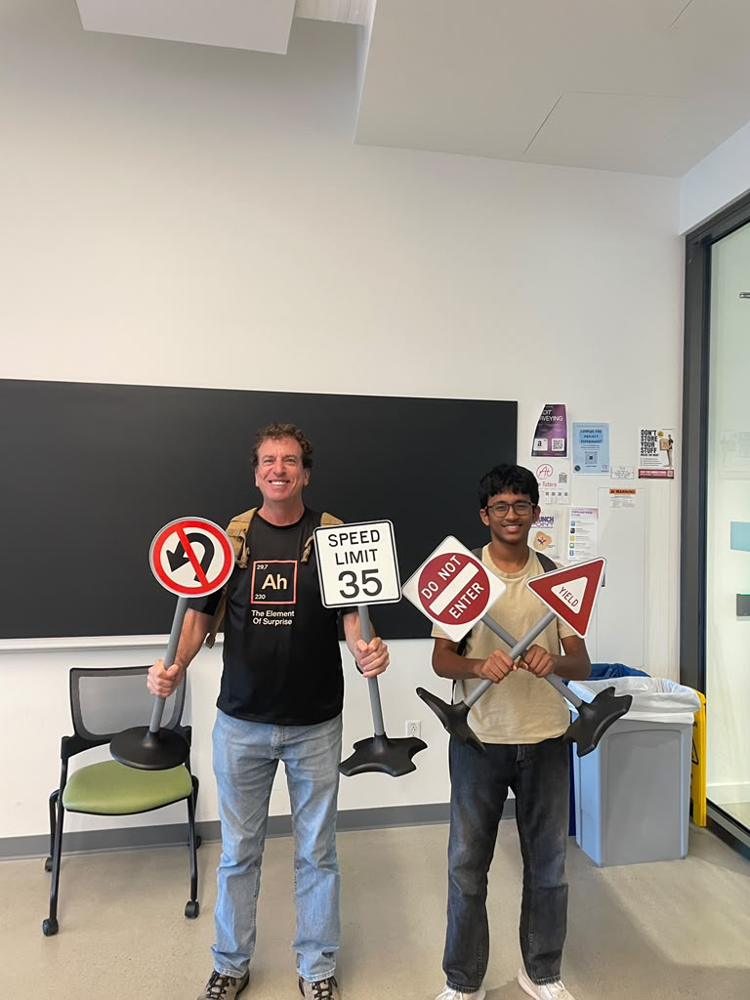

Palimpsest
SwiftUI / Node.js / Product pitch
A social platform that gets people offline and meeting in person. Built and pitched in under 48 hours at TritonHacks 2026.
Best PresentationTritonHacks, UCSD
Software that runs.
On servers. On robots.
Out in the real world.

UC San Diego REHS · 2026
As an AI/ML on the Edge Research Intern under Dr. Jack Silberman, I explored machine-learning workflows and what it takes to deploy them on edge systems.
Models are one part of the problem. The hardware they run on matters, too.
Built, tested, and put to use.
SwiftUI / Node.js / Product pitch
A social platform that gets people offline and meeting in person. Built and pitched in under 48 hours at TritonHacks 2026.
Best PresentationBuilt and maintain Westview Science Olympiad’s home for announcements, schedules, and event resources. Head of Technology, 2026–present.
Designed, developed, and deployed the nonprofit’s website. I also help teach the students it serves.
Technology initiatives, platform development, and digital infrastructure as Deputy Director of Technology at Equality in Forensics.
I’m an 11th-grade student at Westview High School, class of 2028. My time is split between software, research, robotics, and debate.
Running my own servers means I get to write the code—and fix it when it breaks. Speaking and leading teams means I have to explain it, too.
Find me on GitHubThe homelab never
really stops being a lab.
Local hardware and VPS infrastructure. Personal projects, web services, and local LLMs. Set up, taken apart, and kept running by me.
Local shell simulation · commands stay in this page
The teams I build with.
FTC Fusion #18142
Java-based robot software, testing, match strategy, technical documentation, and outreach. Part of the team competing at the 2026 FIRST Championship.
Westview DECA
Chapter strategy and officer coordination, building on two years leading budgeting and fundraising as VP of Finance.
Previously VP of Finance · 2024–2026
Equality in Forensics
Technology initiatives, platform development, and digital infrastructure.
equalityinforensics.orgParliamentary Debate
Mentoring novice speakers, organizing practice, and competing undefeated at SDIVSL League 2A.
Westview CyberPatriot
Team budgeting, expense tracking, and fundraising support for the school’s cyber defense program.
Some individual. Some very much a team effort.
A team award with FTC Fusion #18142. Finished 23rd of 57 teams in the Lovelace Division, with a 30–13–1 season record.
Competitive programming across algorithms, graph theory, data structures, and dynamic programming.
Built and pitched Palimpsest in under 48 hours at UC San Diego.
Fifth place at the California State Career Development Conference and second overall at DECA Districts in Food Marketing.
Sixth place in National Extemporaneous Speaking at SDIVSL Speech 2B; undefeated in Parliamentary Debate at League 2A.
Recognized for sustained volunteer service and community involvement.
Have something in mind?
I’d like to hear about it.